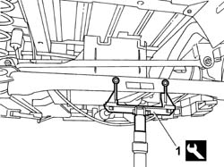
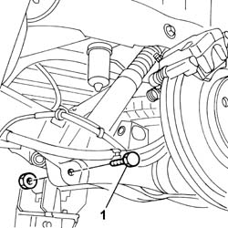
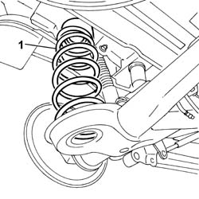
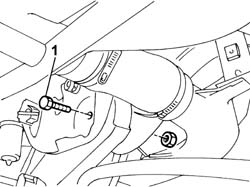
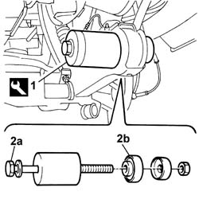
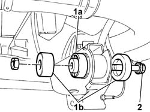

4420D48 REAR SUSPENSION CROSSMEMBER/AXLE BUSHES - REPLACE
- Path
- Procedures > 44 SUSPENSION AND WHEELS > 4420 REAR SUSPENSION > 4420D REAR SUSPENSION AXLE/CROSSMEMBER > 4420D48 REAR SUSPENSION CROSSMEMBER/AXLE BUSHES - REPLACE
- Kind
- repair procedure (removal / refitting; the operation number is the code)
- Applies to
- all engines; all production periods
- Interactive page
- https://sloeber94.github.io/elrnDB-fUlss/en/#/179007393
Applies to: all engines; all production periods
 Removing
Removing
 Refitting
RefittingSee
Disconnect the negative battery terminal.
Op. 5530B56 BATTERY DRIP TRAY COVER - R.R.
. Position the vehicle on a lift.
See
Op. 4450B13 REAR WHEELS (TWO) - R.R
1. Position a hydraulic lift fitted with a support tool under the rear axle.
Description | Code | Function | |
|---|---|---|---|
1 | Support | Rear axle support |

Applies to: all engines; all production periods
Loosen the bolts fixing the shock absorbers.
1. Use the hydraulic lift and release and remove the lower fixing bolts.

Applies to: all engines; all production periods
Lower the hydraulic lift untl the coil springs are completely released.
1. Remove the coil springs.

Applies to: all engines; all production periods
1. Undo the bolts fixing the rear axle to the bodyshell.

Applies to: all engines; all production periods
On the right side of the vehicle, release the ABS sensor wiring and the handbrake cable from the clips fastening them to the bodyshell and place them at the side.
Use the hydraulic lift and lower the axle until both bushes are accessible.
1. Position the tool on the axle.
Description | Code | Function | |
|---|---|---|---|
1 | Extractor/Fitting tool | Extracting/Fitting bushes |
2. Tighten the bolt (2a) until the bush (2b) is extracted.
Proceed in the same way for the remaining bush.

Applies to: all engines; all production periods
Refitting
Removing1. Position a new bush (1a) and the tool (1b).
Description | Code | Function | |
|---|---|---|---|
1b | Extractor/Fitting tool | Extracting/Fitting bushes |
2. Tighten the bolt until the tool is in the end of travel position.
Proceed in the same way for the remaining bush.

Applies to: all engines; all production periods
Use the hydraulic lift and place the rear axle in position.
screw in the bolts fixing the rear axle to the bodyshell without tightening.
Place the coil springs in the special housings.
Use the hydraulic lift and fit the lower bolts fixing the shock absorbers.
Remove the hydraulic lift and the support tool.
Description | Code | Function | |
|---|---|---|---|
. | Support | Rear axle support |
See
Op. 4450B13 REAR WHEELS (TWO) - R.R
On the right side of the vehicle, secure the ABS sensor wiring and the handbrake cable to the clips fastened to the bodyshell.
Position the vehicle on a lift.
Check that the tyre inflation pressure is within specified values.
1. Using the special tool, compress the rear suspension so that height H2 (reference) measured between the bent edge and the ground is:
Applies for versions to 02/2004
Subject | Value | |
|---|---|---|
H2 | REAR WHEEL GEOMETRY (with 205/65 R15 tyres) | mm 172+12/-10 |
Subject | Value | |
|---|---|---|
H2 | REAR WHEEL GEOMETRY (with 215/65 R15 tyres) | mm 176+12/-10 |
Subject | Value | |
|---|---|---|
H2 | REAR WHEEL GEOMETRY (with 215/60 R16 tyres) | mm 180+12/-10 |
Valid for versions from 02/2004
Subject | Value | |
|---|---|---|
H2 | REAR WHEEL GEOMETRY (with 215/65 R15 tyres) | mm 176+12/-10 |
Subject | Value | |
|---|---|---|
H2 | REAR WHEEL GEOMETRY (with 215/65 R16 tyres) | mm 180+12/-10 |
Applies to: all engines; all production periods
Tighten the fixing bolts to the recommended torque.
Value daNm | Fastening | Component | dia | |
|---|---|---|---|---|
. | 8.0 | Bolt | REAR SUSPENSION AXLE - R.R. INCLUDING |
Value daNm | Fastening | Component | dia | |
|---|---|---|---|---|
. | 9.0 | Bolt | REAR SHOCK ABSORBERS (S.M.) |
Remove the tool positioned previously.
Description | Code | Function | |
|---|---|---|---|
. | Tool kit | Suspension pre-loading |
Remove the vehicle from the lift.
Connect the negative battery terminal.
See
Op. 5530B56 BATTERY DRIP TRAY COVER - R.R.
See
Op. 4450A40 REAR WHEEL GEOMETRY - CHECK USING OPTICAL EQUIPMENT, INCLUDES ADJUSTMENT IF NECESSARY